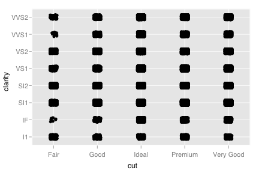
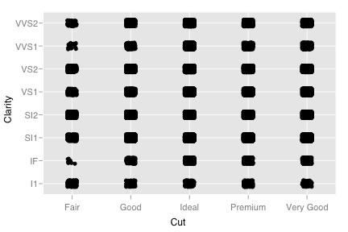

scale_discrete
Discrete position scale
Details
Examples
> (d <- qplot(cut, clarity, data=diamonds, geom="jitter"))  > > d + scale_x_discrete("Cut")> d + scale_y_discrete("Clarity")
> d + scale_x_discrete("Cut") + scale_y_discrete("Clarity")  > > # To adjust the order and labelling, modify the underlying factor src "\n"